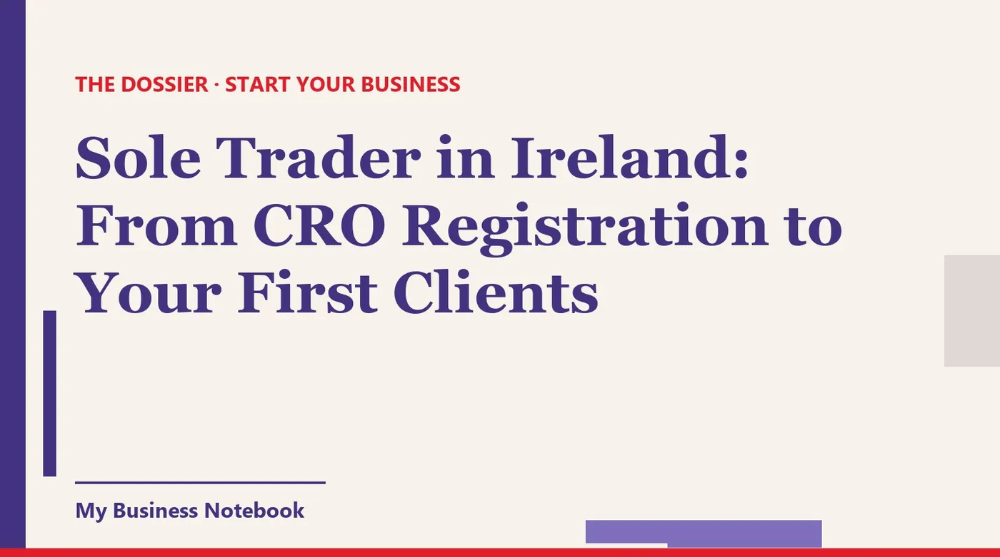

Sole Trader in Ireland: From CRO Registration to Your First Clients
You've got your PPS number, maybe a name for the business, and a van or a workshop ready to go. Now the phone needs to ring. Nobody can hire a sole trader they can't find, so this guide takes you from the Irish paperwork (Revenue, then the CRO if you need it) to being seen on Google and around your own town, and to contacting your first clients within the Irish email rules.

The short answer
To start as a sole trader in Ireland, you register for Income Tax with Revenue using your PPS number, and you only go to the CRO if you trade under a name that isn't your own. That part takes an afternoon.
Getting clients takes longer, so start both on the same day. Set up a verified Google Business Profile with your Eircode or service area, get known around your own town, and contact a short list of local businesses who could need you, within the Irish rules on marketing emails.
Sole trader Ireland registration: Revenue comes first
Citizens Information puts it plainly: to legally become a sole trader, you must register as self-employed with Revenue. You need a Personal Public Service Number (PPSN) first, and once you're registered, Revenue says your Tax Reference Number will be the same as your PPSN.
myAccount, ROS or Form TR1?
- Already a PAYE employee? Revenue says you can register for Income Tax self-assessment in myAccount: Manage My Record, then Tax registrations, then Income Tax. You confirm your NACE code, the date your business started and your expected turnover.
- Already registered for a business tax? You can add Income Tax, VAT or Employer PAYE through ROS.
- Not eligible to register online? Then you use the paper Form TR1, which also covers VAT. Citizens Information notes that Revenue will not process a paper application if you are eligible to register online.
Once registered, Revenue says you must use ROS to file returns and make payments. Put 31 October in your calendar now: by that date each year you pay preliminary tax for the current year, file your return for the previous year and pay any balance due.
Keep records from your first sale. Citizens Information lists what you need: all purchases and sales, all money in and out, and the invoices, bank statements and receipts behind them.
Sole trader CRO: do you need to register a business name?
Only if you trade under a name that is different from your own. "Aoife Brennan, Upholstery" can go straight out the door. "Brennan's Upholstery" or "Wild Atlantic Upholstery" has to be registered with the Companies Registration Office.
Citizens Information sets out the rules. You register within one month of adopting the name, either online through CORE (a €20 fee) or on the paper Form RBN1 (a €40 fee). You then get a Certificate of Registration, which you must display prominently at your place of business.
Choose your trading name before you print anything or create a single online listing. The name on your CRO certificate, your invoices, your van and your Google profile should match letter for letter.
That certificate matters for a practical reason too. Citizens Information says you will generally need it to open a business bank account, which keeps your business income apart from your personal money.
Sole trader check Ireland: what a customer sees when they look you up
Before a new customer rings you, they check you out. In practice that means typing your name into Google, looking at the map, reading a few reviews and glancing at your website or Facebook page.
So the real "sole trader check" is your own online footprint. Search your trading name and your town tonight, in a private browser window, and look at it the way a stranger would. If nothing comes up, or an old number does, fix that before you start contacting anyone.
Sole trader benefits Ireland: know what you're covered for
As a sole trader you pay Class S PRSI, and Citizens Information is frank about it: it gives a limited range of social insurance payments, and you are not covered for short-term payments such as illness or disability payments.
Since 1 October 2025, Class S is 4.2% of your income after allowable expenses, or €650, whichever is greater. If you earn less than €5,000 from self-employment in a year, you're exempt. Registering with Revenue signs you up for Class S automatically.
The takeaway for your client plan: a quiet month costs you directly, with no sick pay behind it. That is exactly why the rest of this guide is about building a steady flow of work early.
How do I get my business on Google?
You create a free Google Business Profile. Google says you can add or claim your business at no charge, so politely hang up on anyone who calls offering to "get you on Google" for a fee.
- Search your name first. A profile may already exist. Claim it rather than creating a duplicate.
- Add the business at business.google.com/add, using your registered trading name exactly, with no extra keywords.
- Pick the most precise category. "Upholstery shop" beats "Furniture store". It decides which searches you appear in.
- Verify. If Google sends a postcard, most codes arrive within 14 days, and Google then reviews your details for up to five working days.
Rural address or no shop? Use a service area
Plenty of Irish sole traders work from home or from a townland address that confuses sat navs. Google's advice: if you don't serve customers at your address, remove it and set a service area instead.
You can add up to 20 service areas by town, postcode or other area, and Google says the whole area shouldn't be more than about two hours' drive from your base. For a tradesperson in Athlone, that could be the towns you actually cover across Westmeath, Roscommon and Offaly, not "all of Ireland".
Then fill in everything: hours, phone, website, a plain description, and real photos of your work. Ask your first happy customers for a review and answer every one. Write your address with the same Eircode everywhere you list the business.
How to advertise my business locally: a plan built for Irish towns
In most Irish towns, word of mouth still moves faster than any advert. Your job is to put your name in the places where people already talk to each other.
- The local Facebook group and community noticeboards. Post once with a clear offer and a photo of real work, then be useful in the comments. The board by the tills in the local supermarket still gets read.
- The GAA club, the parish and the school. A small sponsorship, a raffle prize or an ad in the club or parish newsletter puts your name in front of every family in the parish.
- Local radio and the local paper. A new business in a small town is news. A short note to the newsroom about what you're opening, and why here, can earn you a mention.
- The chamber of commerce and business networks. Go to one meeting a month. Other owners become customers and, more often, referrers.
- Complementary trades. An upholsterer and an interior designer, a plumber and a tiler, a groomer and the vet: list the businesses who meet your customers just before or after you do, and call in.
Talk to your Local Enterprise Office
Your Local Enterprise Office (LEO) is the obvious first stop for free help. Citizens Information points new sole traders there for business advice and funding, and to the New Frontiers programme for early-stage founders.
LEOs also run the Trading Online Voucher scheme to help small businesses trade more online. It has its own eligibility rules, so ask your local office whether you qualify and when. Their training events are also a good place to meet other local owners.
Emailing businesses in Ireland: the S.I. 336/2011 rules
Irish marketing email is governed by the ePrivacy Regulations, S.I. No. 336 of 2011, which the Data Protection Commission enforces. The rules depend on who you're writing to, and they are not a copy of the UK's.
- Companies and other non-individuals: Regulation 13(4) lets you email them, but you must stop once they tell you they don't consent.
- Individuals, including other sole traders: Regulation 13(1) requires their consent. There is one narrow exception in 13(2): an email address that reasonably appears to be used mainly for their business, where your message relates solely to that business activity.
- Private customers: consent, except for existing customers you sold to in the last 12 months, about similar products of your own, with a clear, free way to object each time (Regulation 13(11)).
Whoever you write to, never hide who you are, and always give a valid address where people can ask you to stop. Regulation 13(13) treats each email that breaks the rules as a separate offence, so keep a "do not contact" list and honour it the same day.
In practice: write to info@ addresses of local companies about something that clearly relates to their business, not to someone's personal Gmail. When in doubt, pick up the phone or call in.
How to get clients quickly: your first fortnight
The fastest route is to do a little of everything in the same two weeks, rather than perfecting one channel. Here's the order that works for a new sole trader in a town.
- Days 1 to 3: Revenue registration done, CRO name filed if you need one, Google Business Profile created with your service area.
- Days 4 and 5: photos of your best work uploaded, the same name, Eircode and number on two or three directories, one post in the town's Facebook group.
- Week 2: a list of around thirty local businesses that fit your target, a short message to each about their situation, one or two follow-ups a few days apart.
- Every job: ask for a review and a referral while the customer is still pleased.
A target like "cafés and guesthouses in Kilkenny city" gets replies. "Anyone who might need me" doesn't. Narrow is what makes you quick.
The tool that puts it all in one place
You can do all of this by hand. But between listings to keep current, a prospect list in a spreadsheet and follow-ups on the back of an envelope, most people lose track within a month. That's why we recommend Kaptor, a platform built for businesses that are just starting out.
Kaptor
Kaptor brings together what usually takes a handful of separate tools:
- Visibility: your business listed on the directories that matter for your country and trade (more than 120 listings), with the same details everywhere, tracked listing by listing, and alerts when something goes out of date.
- Google Business Profile: help creating or claiming it, a heads-up on missing fields, and help asking for and tracking reviews.
- Prospecting: businesses to contact by trade and area (a town, a county or another country), with contact details, ranked by AI from hottest to coldest, in a pipeline from "to contact" to "won".
- Emails and follow-ups: sent from your own address or domain, automatic follow-ups, unsubscribe built in, replies in one place. Nothing goes out without your approval, so you decide who gets contacted.
- Website or blog: no website? Kaptor generates one with a contact form. Already have one? It generates an SEO blog that points back to it.
You can open a free space to try it. Paid plans are Starter at $89 a month, Growth at $149 and Agency at $499, billed in US dollars, with no contract.
Can customers in your town find you?
Kaptor's free audit searches for your business on the directories in your country and shows you where you're listed, and where customers can't find you. No card, no sign-up.
Run my free auditRead next: for a week-by-week visibility plan with no marketing budget, see How to Get Your New Business Noticed.
FAQ
How do I register as a sole trader in Ireland?
Register for Income Tax as self-employed with Revenue, using your PPS number. PAYE employees can do it in myAccount under Manage My Record, then Tax registrations. If you can't register online, use the paper Form TR1.
Does a sole trader need to register with the CRO?
Only if you trade under a business name that is different from your own name. You register it with the CRO within one month of adopting it: €20 online through CORE or €40 on the paper Form RBN1.
What sole trader benefits do I get in Ireland?
You pay Class S PRSI, which gives a limited range of social insurance payments. Citizens Information notes you are not covered for short-term payments such as illness or disability payments.
How do I get my business on Google for free?
Create or claim a Google Business Profile at business.google.com/add, which Google says is free. Verify it, then add your hours, photos and either your address or up to 20 service areas if you travel to customers.
Can I send cold marketing emails to businesses in Ireland?
To companies, yes, until they tell you they don't consent. To individuals, including sole traders, you need consent, except at an address mainly used for their business when your message relates solely to that business. Always identify yourself and give a valid address to opt out.
How to get clients quickly as a new sole trader?
Get your Google profile live in the first days, post in local groups, then contact a targeted list of about thirty local businesses with a short, personal message and one or two follow-ups. Ask every happy customer for a review and a referral.
Official sources
- Revenue: How to register for tax as a sole trader : PPSN, myAccount, ROS and Form TR1.
- Revenue: Registering your business : business names different from your own go to the CRO on Form RBN1.
- Citizens Information: Becoming self-employed : CRO fees and one-month rule, 31 October pay and file, Class S PRSI, Local Enterprise Offices.
- Irish Statute Book: S.I. No. 336 of 2011, Regulation 13 : rules on unsolicited marketing email to individuals and to other subscribers.
- Data Protection Commission: FAQ on consent for electronic direct marketing : consent, the existing customer exception and opt-outs.
- Google Business Profile Help: Add or claim your Business Profile : free to add or claim a business.
- Google Business Profile Help: Verify your business : postcard codes and review times.
- Google Business Profile Help: Service area businesses : removing your address, up to 20 service areas, about two hours' drive.
- How to Advertise Your Business Locally for Free in the UK
- How to Get Your Business on Google Maps for Free (Step by Step)
- Got your ABN? Here's how to get your first customers
- How to Get Your New Business Noticed (Even With No Marketing Budget)
- How to Market a Small Business Locally: A Playbook for Service Trades
- Registered Your Sole Proprietorship? How to Get Your First Customers in Canada
- Sole Trader? How to Get Customers as a New Business